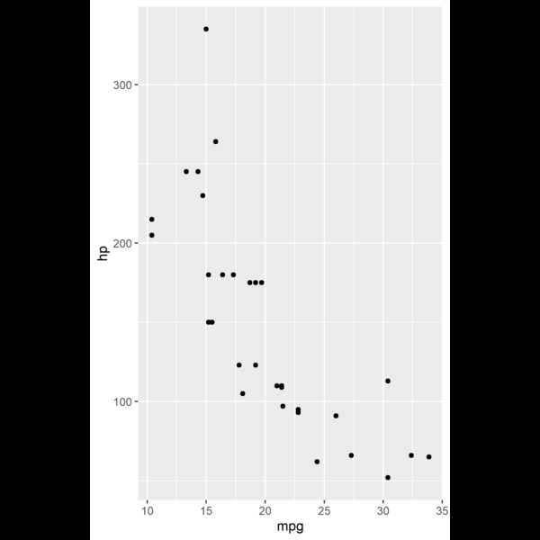

camcorder.RmdThe use case for {camcorder} is to track and record the ggplots that are created across one or multiple sessions with the eventual goal of creating a gif showing all the plots created sequentially.
To get started, load {camcorder} and initialize recording using the gg_record() function. This function has several options, such as where to save the recordings, device to use to save the recordings, and the height/width of the image to create. By default it will save to a temporary directory so recordings will go away once the rsession is closed.
library(ggplot2)
library(camcorder)
library(patchwork)
gg_record(
dir = file.path(tempdir(),"recording"), # where to save the recording
device = png, # device to use to save images - either a character string or function
width = 4, # width of saved image
height = 6, # height of saved image
units = "in", # units for width and height
dpi = 300 # dpi to use when saving image
)Once the recorder is initialized, any ggplot that is made and printed will be automagically recorded.
ggplot(mtcars) +
geom_point(aes(x = mpg, y = hp))
ggplot(mtcars) +
geom_point(aes(x = mpg, y = hp, shape = as.factor(gear)))
ggplot(mtcars) +
geom_point(aes(x = mpg, y = hp, color = gear))
ggplot(mtcars) +
geom_point(aes(x = mpg, y = hp, color = gear)) +
geom_smooth(aes(x = mpg, y = hp))
ggplot(mtcars) +
geom_smooth(aes(x = mpg, y = hp)) +
geom_point(aes(x = mpg, y = hp, color = gear))
ggplot(mtcars) +
geom_smooth(aes(x = mpg, y = hp)) +
geom_point(aes(x = mpg, y = hp, color = gear)) +
theme_light()
ggplot(mtcars) +
geom_smooth(aes(x = mpg, y = hp)) +
geom_point(aes(x = mpg, y = hp, color = gear)) +
theme_light()+
ggtitle("MPG vs Horse Power!")
ggplot(mtcars) +
geom_smooth(aes(x = mpg, y = hp)) +
geom_point(aes(x = mpg, y = hp, color = gear)) +
theme_light()+
ggtitle("MPG vs Horse Power!")+
labs(subtitle = "Power and economy, the classic compromise!")
ggplot(mtcars) +
geom_smooth(aes(x = mpg, y = hp)) +
geom_point(aes(x = mpg, y = hp, color = gear)) +
theme_light()+
ggtitle("MPG vs Horse Power!")+
labs(
subtitle = "Power and economy, the classic compromise!",
x = "Efficiency (Miles/Gallon)",
y = "Power (Horsepower)")If at any point, that you want to save your plots in a different format than what the recorder was initialized, or just set them for the first time, with this can be done through the gg_resize_film() function. This will set the size and dpi of all plots going forward.
gg_resize_film(
height = 4,
width = 6,
units = "in",
dpi = 350
)
ggplot(mtcars) +
geom_smooth(aes(x = mpg, y = hp)) +
geom_point(aes(x = mpg, y = hp, color = gear)) +
theme_light()+
ggtitle("MPG vs Horse Power!")+
labs(
subtitle = "Power and economy, the classic compromise!",
x = "Efficiency (Miles/Gallon)",
y = "Power (Horsepower)") +
theme(
legend.position = "bottom",
panel.background = element_rect(colour = "green")
)
ggplot(mtcars) +
geom_smooth(aes(x = mpg, y = hp)) +
geom_point(aes(x = mpg, y = hp, color = gear)) +
theme_light()+
ggtitle("MPG vs Horse Power!")+
labs(
subtitle = "Power and economy, the classic compromise!",
x = "Efficiency (Miles/Gallon)",
y = "Power (Horsepower)") +
theme(
legend.position = "bottom",
panel.background = element_rect(colour = "green",fill = "green")
)Finally, to generate the final gif, use the gg_playback() function. The user can define: - where the final gif gets saved by setting the name argument, - duration of the first and last images with first_image_duration or last_image_duration - delay between frames in seconds with frame_duration - size of images and gif
gg_playback(
name = file.path(tempdir(),"recording","vignette_gif.gif"),
first_image_duration = 8,
last_image_duration = 12,
frame_duration = .25,
image_resize = 600,
width = 800,
height = 600
)Once rendering is complete, a gif is saved and then opened in your viewer.
